Media player · built on mpv · Linux, macOS and Windows
Your video, edge to edge.
Everything mpv can play, in a window with nothing in it but the picture.
The title bar and a floating controller come when you move the mouse and
go when you stop. Built-in clients for Jellyfin and YouTube, and the same
player on all three desktops.
Rust throughout · Slint for the interface · mpv for playback
Open…Files or a folderOpen URL…Streams and online videoYouTubeYour channels, search and Watch LaterLiving room serversamAdd Server…Browse another Jellyfin server
Recent
Mandelbrot Set.mkv
00:08
That is not a screenshot, and it isn't a recording either. It is the
window rebuilt from the app's own sizes and words, playing its test
patterns as your browser draws them. Hover the seek bar, open the
playlist, click the picture to pause or double-click it for full
screen, or press Space, ←→
or f. Home, the house in the title bar, goes back to the
welcome screen.
UNDERNEATH
mpv does the playing.
So what plays is what mpv plays, with hardware decoding when mpv can
get it. Your own mpv.conf, scripts and fonts go in
Patina's mpv folder and work as they would there, and any
mpv option can be set from the command line.
ON TOP
A real application.
Written in Rust and drawn with Slint, with no browser hidden inside.
Open several windows, each with its own player. Open a file from a
terminal or a file manager and it goes to the Patina already running,
which comes to the front. Media keys and the desktop's own player
controls work: MPRIS on Linux, the media panel on Windows, and Now
Playing on macOS, though that has yet to be tried there.
A new window opens at 1280×720 on the welcome screen: Open, Open
URL, YouTube, your Jellyfin servers, Recent and Resume Last Playback.
Home goes back there from whatever plays, at the welcome screen's own
size; it is in the title bar, on the controller in full screen, and
among music mode's buttons. When something from the library or the
YouTube section ends, the window goes back there, at that view's
size; a file ends on its last frame, or on the welcome screen with
“Keep the window open after playback finishes” turned off.
A click on the video pauses or resumes at once, and a double click
goes full screen.
SUBTITLES
They find themselves.
Open an episode and Patina looks through the folder: by
name, by episode number across the season, and in subfolders such as
Subs/, with the languages you prefer first.
~/Videos/Hollow Coast/Season 1/ · preferred languages: Japanese, English
Hollow.Coast.S01E02.1080p.mkvplaying
Hollow.Coast.S01E02.1080p.ja.srtthe same name, in your first language
Subs/Hollow.Coast.S01E02.1080p.en.srtin a subfolder
Hollow Coast - 1x02.en.assthe same episode, spelled differently
Hollow Coast - 1x03.en.asskept for episode 3
Hollow.Coast.S02E02.srtanother season
And when the folder has nothing, Find Online Subtitles searches
OpenSubtitles.com by the file's hash and name (a stream or a Jellyfin item
by its title), in your languages, with your own API key and, if you like,
your account. Patina can also search by itself when a local video of 20
minutes or more opens with no subtitles, and then takes only an exact
match; that is off by default. The password stays in your system's
password store.
BUILT-IN JELLYFIN CLIENT
Your Jellyfin library, in the player window.
Sign in and your servers are listed on the welcome screen. Pick one and
its films, shows and music are in the player window, and what you pick
plays right there.
Patina
HomeMoviesShowsMusicSearch
samLiving room server
Continue Watching
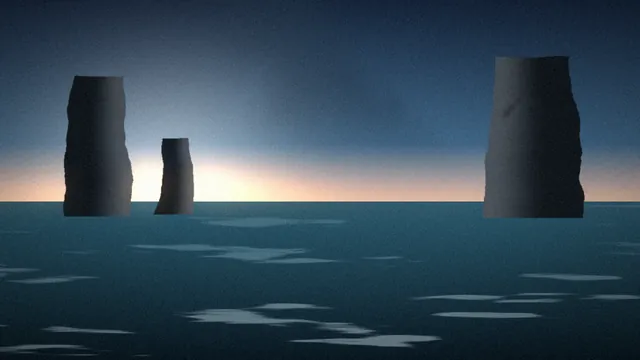
The Long TideS1 E3 · The Stacks
Northern Quiet2025
Salt and SandS2 E1 · The Crossing
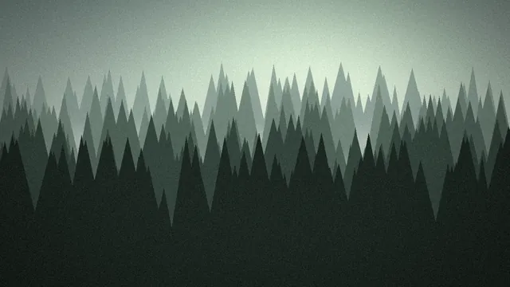
Low CloudS1 E5 · Into the Pines
Latest in Movies
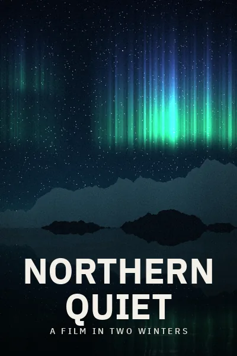
Northern Quiet2025
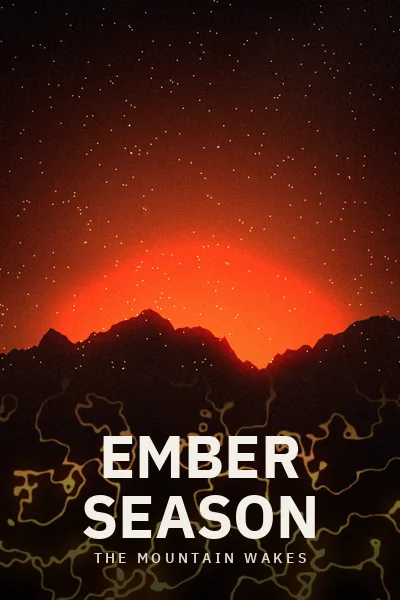
Ember Season2026
The Last Ferry2024
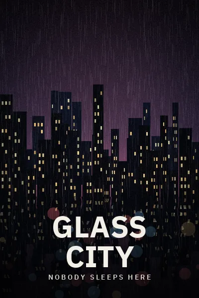
Glass City2026
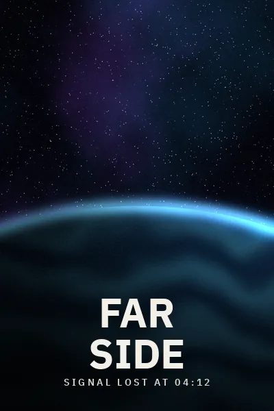
Far Side2025
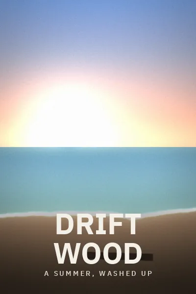
Driftwood2023
Played straight from the server.
Whatever mpv can open plays as it is. The server converts it only when you ask for a lower quality in the Video Quality menu, or when the file can't be played directly. Versions of a film are there to choose from.
The next episode is lined up. Intros, credits, recaps and previews that the server marks get a Skip button, or are skipped without asking if you choose.
The server's own previews show in the seek bar, and its files can be downloaded.
Search, collections and More Like This, and marking played or favourite. The title bar's Home goes back to the welcome screen from any page, and when playback ends the window goes back to the library, at the library's own size.
Your place stays on the server.
Where you stopped and what you've watched are kept there, so your other Jellyfin apps agree.
Music plays through music mode, with the playlist as the queue and a song's lyrics in a Lyrics tab beside it.
Jellyfin 10.10.7 or newer. Several servers, by address or found on your network, signed in with a password or Quick Connect. The sign-ins stay in your system's password store.
BUILT-IN YOUTUBE CLIENT
YouTube in the player window, with no account.
A feed of the channels you follow, search, a Watch Later list, the
videos you've played, and downloads, opened from the welcome screen. Patina never signs in to
Google, and what you pick plays in mpv like anything else.
Patina
YouTube
FeedSearchWatch LaterChannelsHistory
Checked 4 minutes agoShorts
LIVENorthern Lights, Live from the FjordNorth by NightLive now · 1.2K views
12:04Sunrise on the Ridge, UnhurriedSlow Places3 hours ago · 12K views
8:41How Dunes MoveField Notes5 hours ago · 48K views
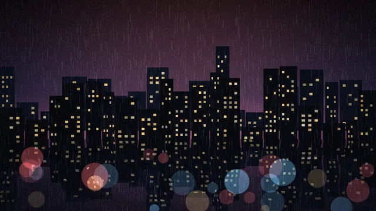
4:00:12Rain on the City, Four HoursQuiet Hours1 day ago · 310K views
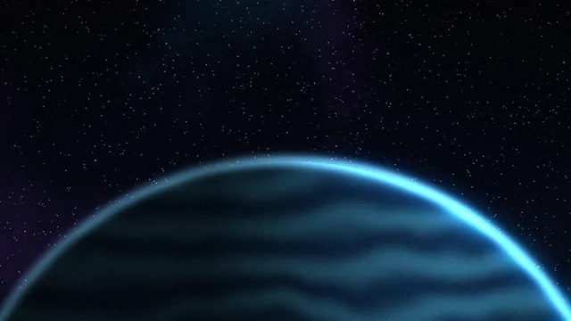
14:33If You Could Watch a Planet RiseOrbit Club2 days ago · 1.1M views
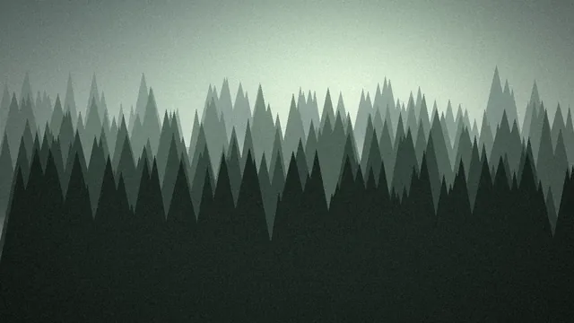
21:17Fog in the Old ForestSlow Places4 days ago · 9.4K views
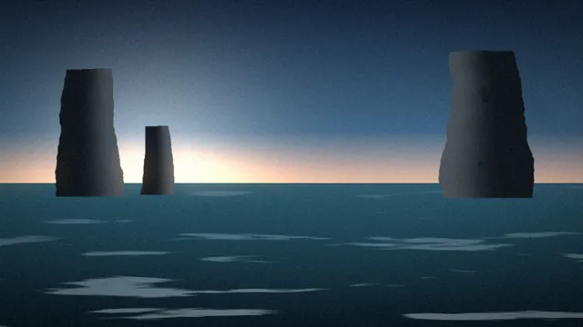
9:52Storm CoastField Notes7 days ago · 76K views
16:52Sunset Between the ButtesSlow Places14 days ago · 22K views
The lists are yours.
Follow a channel by its link or @handle, or from search. Channels and Watch Later import from and export to the files of Google's data export, and channels go to and from NewPipe's subscriptions file too.
Watch Later and your channels are kept by Patina and don't appear on YouTube. Your place in a video and what you've watched stay on your computer.
Videos play up to your screen's resolution by default. When one ends, or on Escape or Stop, the window goes back to the page it was played from, at the same place: the feed, search, Watch Later, a channel or History.
No account isn't no trace.
Nothing goes until you open it. Opening it, if the last check is over 30 minutes old, asks YouTube about each channel you follow, and fetches thumbnails and any missing titles. So Google can see your address and those channels, along with what you search for and play.
The HTTP proxy preference covers all of it, and nothing goes direct if the proxy can't be used. Nothing goes to the developer. The privacy page has the details.
YouTube's terms bar downloading and automated access, which this does through yt-dlp and in reading channel feeds. Using it is your choice, and nothing else in Patina depends on it.
OvertonesNorthern Oscillator - Pure Tones00:4103:18
PlaylistChapters
7 items · 27:44
1Morning SignalNorthern Oscillator03:34
2Low TideNorthern Oscillator04:11
OvertonesNorthern Oscillator03:18
Add Files…URL…Clear
MUSIC MODE
It shrinks for an album.
A mini player: the cover with the title and artist, compact
controls, and the playlist as a drawer below. Its three buttons close
the window, go back to the full window, or go home to the welcome
screen. It comes on for audio files and goes for video, and audio
played outside it has a button on the controller to come back. An
album in a single file is split by its chapters, and a song from
Jellyfin shows its lyrics in a Lyrics tab.
ONLINE VIDEO
Paste a URL.
Online video comes through yt-dlp, with
a quality preference, Video Quality and Audio Quality menus that
switch where it is playing, and downloads, in a window that shows their
progress.
patina://open?url=… links let a browser extension or
a web page hand Patina a stream. They are limited to streams, and to
mpv options that are safe for a page to set.
FROM A TERMINAL
Or hand it over from a terminal.
While Patina is running, the inputs open in it and the command returns at once, unless you ask for a new instance.
patina [OPTIONS] [FILE | URL | -] ...
-e, --enqueueAdd to the newest window's playlist-w, --separate-windowsA window for each input-f, --fullscreenPlay in full screen--pipPlay in picture-in-picture--music-modePlay in music mode--mpv-NAME=VALUESet an mpv option--new-instanceStart another Patina instead-v, --verboseLog mpv's and Patina's diagnostics
KEYS
Every key can be yours.
On macOS, Command takes the place of Ctrl. Bindings are in mpv's
input.conf format, and you can edit them in the preferences
with a key recorder.
# input_conf/mine.confUP add volume 5# an mpv command#@patina Ctrl+o open-file# or one of Patina's
Play / pause
Space
Half / double speed
Ctrl[Ctrl]
Seek 5 seconds
←→
A-B loop
CtrlL
Previous / next frame
Alt←Alt→
Subtitle delay
ShiftZShiftX
Volume
↑↓
Playlist / chapters
CtrlShiftPCtrlShiftC
Previous / next file
Ctrl←Ctrl→
Music mode
CtrlAltM
Full screen
f
Jump to a time
CtrlJ
With the mouse, a click pauses or resumes, a double click toggles full
screen, and a right click opens the menu (on macOS it pauses instead). The
wheel changes the volume and a horizontal scroll seeks. Drag the video to
move the window, and drag the controller to move it.
GET IT
Download.
There is no release yet. From the first one on, each carries
self-contained packages for all three desktops, with mpv inside, and
signed checksums for everything. The commands below work from then on.
Linux, as a Flatpak bundle for x86_64 or aarch64,
with libmpv, yt-dlp and Deno inside. Its runtime comes from Flathub, though
Patina itself is not on Flathub. In the sandbox Patina can read any file,
but on its own writes only to Downloads and Pictures/Patina. Download the
bundle for your architecture, then:
flatpak install ./patina-*.flatpak
macOS 11 and later, one universal app, signed and notarised, with libmpv,
yt-dlp and ffmpeg inside. Homebrew installs it and a patina
command. Apart from CI's tests, nothing has been tried on Apple Silicon,
and neither has the signed, notarised app.
brew install --cask jzbz/tap/patina
Windows 10 and 11, an installer that installs for you alone and needs no
administrator rights, or a folder to run from anywhere. Both carry
libmpv, yt-dlp and an LGPL ffmpeg. This will install it once winget has
the package:
winget install Patina.Patina
Every package carries yt-dlp
for online video and the YouTube client, and ffmpeg to join video and
audio (the Flatpak Deno as well), so nothing else needs installing. On
macOS and Windows a newer yt-dlp of your own is used instead; the
Flatpak keeps to its own.
Every release carries one SHA256SUMS covering all of these,
signed by hand with the key
252B 901C 8885 3CF9 F939 2559 2497 38C8 641C 3359.
Get it with gpg --locate-keys jz@jz.bz and compare
gpg --fingerprint jz@jz.bz with that. Then check the
packages before trusting any of them: